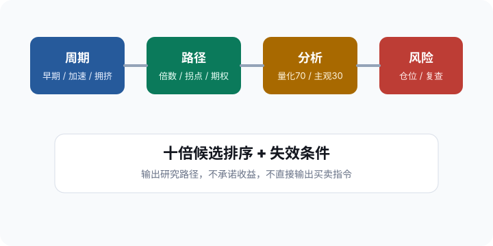

股
选股雷达
Stock Screening & Analysis
重置条件
复制分析
通过数量
0
最高综合分
0
当前策略
均衡成长
数据时点
示例数据
Ranking
候选股票
排序
综合分
动量
质量
风险低优先
估值风险低优先
代码
名称
行业
综合
量化70
主观30
风险
状态
没有股票满足当前条件。降低最低分、放宽回撤或估值风险后再筛。
Compare
前五候选对比
分数越高越好，风险项越低越好
